Fire Spread KZ · Казахстан
Прогноз выгорания на 12, 24, 48 и 72 часа: спутниковые данные, физика огня и нейросеть
Ноябрь 2026
Вход · момент t
Выход · карта
Вероятность сгореть для каждой клетки 500 × 500 м в окне 48 × 48 км
12 ч
24 ч
48 ч
72 ч
Для сайта два режима: прогноз реального пожара и симуляция «что если» от точки возгорания.
Введение · 2
~10 ч
медиана, за которую сгорает половина площади: большинство пожаров догорают за сутки
~1 %
клеток сцены сгорает за горизонт, поэтому «точность» бесполезна, мерим F1
51 %
площади степного пожара в среднем видит спутниковый продукт MCD64A1
Огонь в степи быстрый, а спутниковые метки неточные и запаздывают. Поэтому главная работа — собрать точные по времени данные.
Введение · 3
| Что знаем | Источник | Зачем |
|---|---|---|
| Пожары и гари | Global Fire Atlas v2, MODIS MCD64A1 | какие клетки сгорели |
| Термоточки | NASA FIRMS: VIIRS 375 м, MODIS 1 км | когда огонь пришёл в клетку |
| Эталон | экспертные контуры 4 заповедников | независимая проверка |
| Растительность | ESA WorldCover, MODIS NDVI | топливо и его сухость |
| Рельеф, барьеры | Copernicus GLO-90, OpenStreetMap | склоны, дороги, посёлки |
| Погода | ERA5, прогноз GFS, станции NOAA | ветер, жара, влажность |
| Пожароопасность | NASA GFWED (индексы FWI) | сухость топлива |
| Снимки | Sentinel-2, Landsat | уточнение контуров |
Данные · 4
A · заповедники
44 пожара
Алтын-Дала, Коргалжын, Наурзум, Миргород, 2014–2023. Контур нарисован экспертом по снимку 30 м.
Роль: независимый эталон, на нём модели не учатся (393 среза).
B · весь Казахстан
14 247 пожаров
Global Fire Atlas + термоточки VIIRS, 2013–2024: 111 215 срезов «пожар в момент t».
Роль: обучение, подбор и тест.
Данные · 5
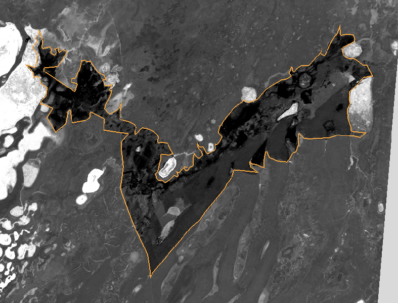
Sentinel-2 после пожара, гарь тёмная. Оранжевое — контур, который эксперт заповедника нарисовал по снимку 30 м.
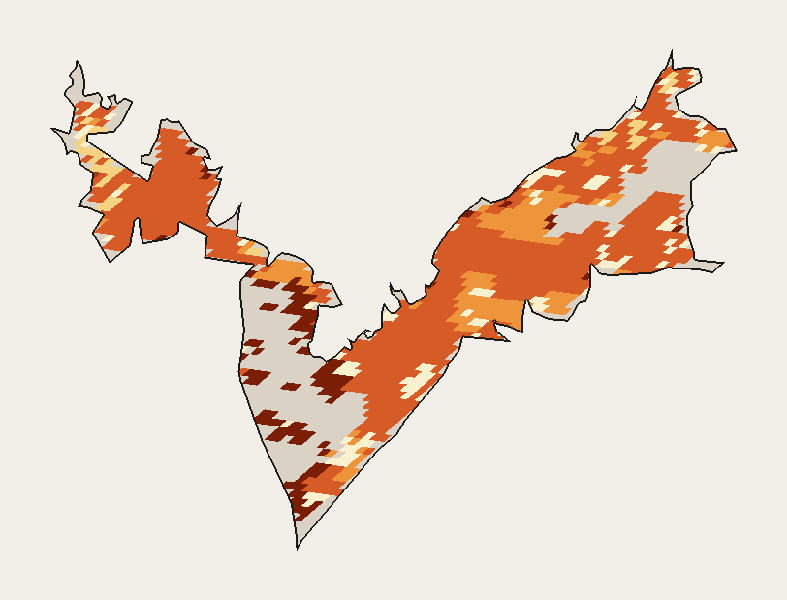
Видит 71 % этой гари (серое — пропуск; в среднем 51 %). Дата — только день, поэтому время идёт ступеньками.
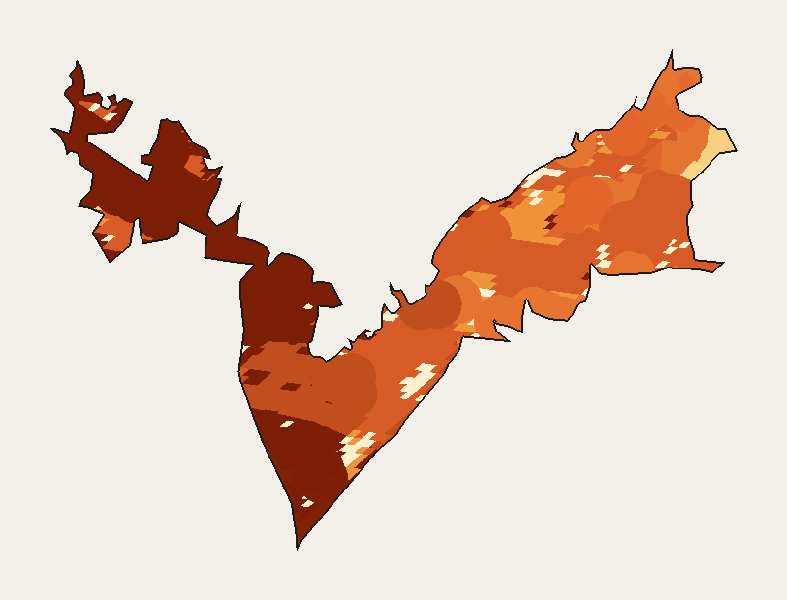
Время прихода огня по термоточкам VIIRS в каждой клетке контура: видно, как огонь шёл от очага.
0 ч
108 ч от возгорания
Данные · 6 · Алтын-Дала, пожар 30 июня 2019, участок 37 × 49 км
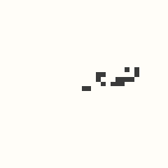
гарь сейчас
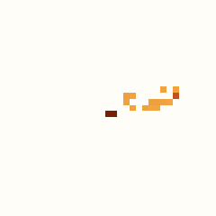
возраст гари
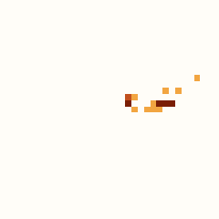
термоточки 24 ч
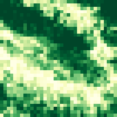
доля травы
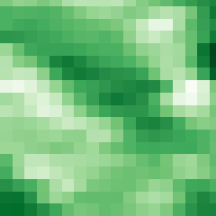
NDVI
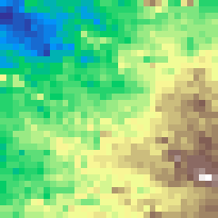
рельеф
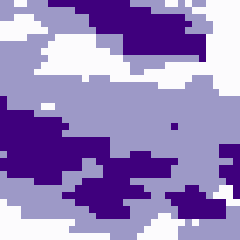
прошлые гари
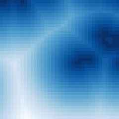
до дорог
| Признак | Значение |
|---|---|
| ветер, 24 ч | 10,9 м/с, с ВСВ |
| порывы | до 22 м/с |
| температура | до 11 °C |
| влажность | от 14 % |
| осадки | 0 мм |
| индекс FWI | 49 |
| пожар идёт | 2 сут, 4 км² |
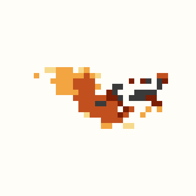
12 ч
24 ч
48 ч
72 ч
Таких примеров 111 тыс.: каждый пожар даёт срез каждые 12 часов своей жизни, сцена 96 × 96 клеток по 500 м.
Данные · 7 · пожар 3 апреля 2023, 45,36° с. ш., 75,03° в. д.; показан участок 17,5 × 17,5 км из сцены 48 × 48 км
Главное отличие нашего датасета
14,7 ч
ошибка суточной даты выгорания (обычный подход)
0,3 ч
ошибка по термоточкам VIIRS (наш подход)
Медиана по экспертным пожарам. Каждой клетке сохранён источник метки, и обучение доверяет точным меткам больше, чем суточным.
Данные · 8
Обучение
2013–2021
43 576 + 7 752 крупных срезов
до 4 с пожара из 96 087
Подбор
2022
7 069 срезов
Тест
2023–2024
8 059 срезов, 959 пожаров
Данные · 9
знает куда: скорость огня от ветра, сухости, топлива и склона
знает где и сколько: выучила по 12 тыс. реальных пожаров
объединяет обе вероятности в каждой клетке; работает на сайте
Каждая по отдельности ошибается по-своему. Вместе они дают и правильный масштаб, и правильное направление.
Модели · 10
Канадская система FBP, тип O-1b «сплошная сухая трава».
ветер + сухость (FFMC, NDVI) + склон → м/мин
Огонь растёт эллипсом по ветру: голова быстрая, тыл медленный. При ветре 8 м/с эллипс вытянут в 2,4 раза.
По принципу Гюйгенса каждая точка кромки — новый маленький эллипс. На сетке это кратчайший путь по 16 соседям: время = расстояние / скорость.
Почему FBP, а не Ротермел
Ротермел требует подробных параметров топлива (запас, плотность, теплота горения). Для Казахстана их нет — пришлось бы угадывать.
FBP O-1b создана для степной травы и берёт только ветер, сухость (FFMC) и NDVI — они есть всегда. Точность близкая, но модель проще и надёжнее.
Сильная сторона: направление по ветру верно в 93–95 % случаев. Слабая: не знает про тушение и затухание и завышает площадь.
Модели · 11
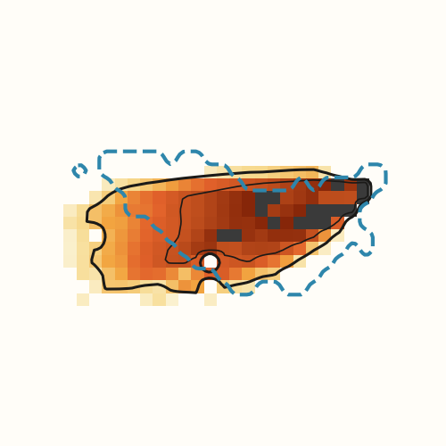
ветер 10,9 м/с с ВСВ, сухость травы (FFMC 92), NDVI и доля травы в клетке, уклон, гарь сейчас
для каждой клетки: через сколько часов дойдёт огонь. Тёмное — скоро, светлое — до 4 суток. Чёрные линии — 24 и 72 ч, синий пунктир — что сгорело на деле.
«успевает ли огонь дойти за горизонт»: log(T / h) и признак «недостижимо»
33,8 км²
по физике за 72 ч (на деле 22,8)
0,52
F1 на 72 ч
Модели · 12 · тот же пожар 3 апреля 2023, участок 17,5 × 17,5 км
28 карт
4 карты
49 чисел погоды → FiLM
видит весь пожар, а skip-связи сохраняют точное положение кромки
погода усиливает или гасит признаки в каждом блоке: сушь и ветер — «гори», дождь — «стоп»
12 ⊂ 24 ⊂ 48 ⊂ 72 ч гарантировано архитектурой
Модели · 13 · 540 тыс. параметров, ~1 мин на эпоху на GTX 1070 Ti
43 576 срезов 2013–2021 (+7 752 крупных пожаров для U-Net 2 и 4)
28 карт + 49 чисел погоды → 4 карты «сгорит за 12 / 24 / 48 / 72 ч»
BCE (сгоревшая клетка весит в 5 раз больше) + Dice за форму пятна
чем неточнее время метки, тем меньше её вес; суточная дата на 12 ч не учитывается
куски 80 × 80 клеток, повороты и отражения — вектор ветра поворачивается вместе с картой
AdamW, 24 эпохи по ~70 с на GTX 1070 Ti; берём эпоху с лучшим F1 на 2022 году
F1 на 2022 году по эпохам: 0,17 → 0,31 (лучшая — 23-я). Серая — ошибка на обучении, она падает всё время.
Модели · 14 · график — U-Net 1 (погода ERA5); остальные три обучены так же на других данных
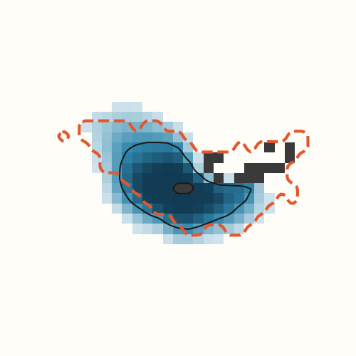
для каждой клетки — шанс сгореть за 72 ч. Тёмно-синее — почти наверняка, чёрная линия — 50 %. Красный пунктир — что сгорело на деле.
знает по тысячам пожаров, где и сколько обычно догорает рядом с такой гарью и в такую погоду
осторожна с площадью и слабо слушает ветер: на всём тесте лишь 26 % её прогнозов роста идут по ветру
15,3 км²
за 72 ч при пороге 50 % (на деле 22,8)
0,64
F1 на 72 ч
Модели · 15 · ансамбль 4 U-Net, тот же пожар 3 апреля 2023
U-Net
вероятность по данным
+
Физика
когда дойдёт огонь
=
Прогноз
вероятность сгореть
logit p = a · logit(p U-Net) + b · log(T / h) + c · [T недостижимо] + d · log(T / h) · ветер + e
Модели · 16
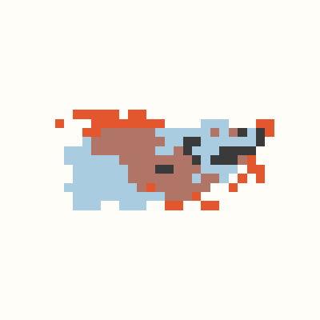
Физика · F1 0,52
33,8 км²: направление верное, площадь завышена
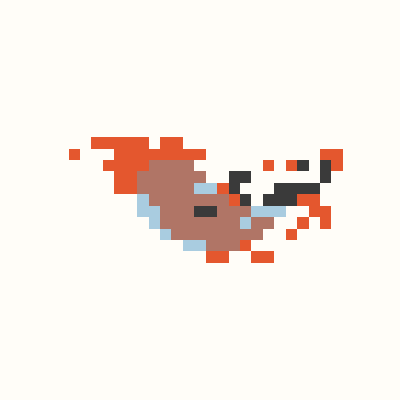
U-Net · F1 0,64
15,3 км²: место верное, площадь занижена
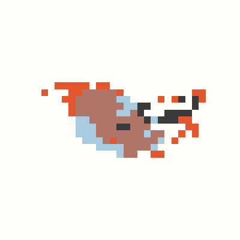
Гибрид · F1 0,69
21,8 км² при факте 22,8: лучшее из обеих
гарь на старте
сгорело, не предсказано
предсказано, не сгорело
совпало
Модели · 17 · пожар 3 апреля 2023, тест; у U-Net порог 50 %, у физики — «огонь дошёл за 72 ч»
базовая, погода ERA5
+ 7 752 примера крупных пожаров
учится на погоде с ошибками прогноза GFS
крупные пожары + ошибки прогноза
карта и ветер поворачиваются вместе, 32 прогноза усредняются
гибрид даёт итоговую карту вероятностей
Разные модели ошибаются в разных местах, поэтому среднее точнее любой из них. Состав ансамбля выбран на 2022 году, тест в выборе не участвовал.
Модели · 18
| F1 по клеткам | 12 ч | 24 ч | 48 ч | 72 ч |
|---|---|---|---|---|
| Ансамбль U-Net | 0,264 | 0,251 | 0,295 | 0,311 |
| Гибрид (на сайте) | 0,238 | 0,239 | 0,276 | 0,300 |
| Гибрид, допуск 1 км | 0,418 | 0,433 | 0,506 | 0,542 |
Результаты · 19 · F1 суммарный по всем клеткам; пороги подобраны на 2022 году
86 %
прогнозов роста идут по ветру (72 ч). У одной нейросети — лишь 26 %, почти как случайно.
0,98
отношение площади прогноза к факту на 12–24 ч; на 48–72 ч — 1,2–1,3
0,54
F1 на 72 ч, если допустить ошибку кромки в 1 км
Негорючие участки (вода, город) не горят никогда; при штиле пожар растёт почти кругом, при ветре — вытянутым эллипсом.
Результаты · 20 · гибрид, тест 2023–2024
0,29
0,48
0,40
0,55
0,44
0,59
0,47
0,58
12 ч
24 ч
48 ч
72 ч
Оранжевый — наш гибрид на 35 пожарах заповедников, которых не было в обучении.
Серый — потолок: насколько спутниковая разметка тех же пожаров совпадает с экспертной. Выше него модель, обученная на спутниковых данных, стабильно не прыгнет.
Слабое место: площадь здесь завышена примерно в 1,9 раза.
Результаты · 21 · F1 по экспертным контурам, погода ERA5
~1 с
весь запрос прогноза; почти всё время — загрузка прогноза погоды
0,3 с
весь ансамбль на обычном процессоре, без видеокарты (0,1 с на GPU)
8,6 МБ
все 4 нейросети вместе
текущая гарь и термоточки → карты на 12–72 ч (гибрид)
точка и свой ветер → рост огня по кадрам до 10 суток (физика, откалиброванная по данным)
Результаты · 22 · замер на GTX 1070 Ti, сервер FastAPI
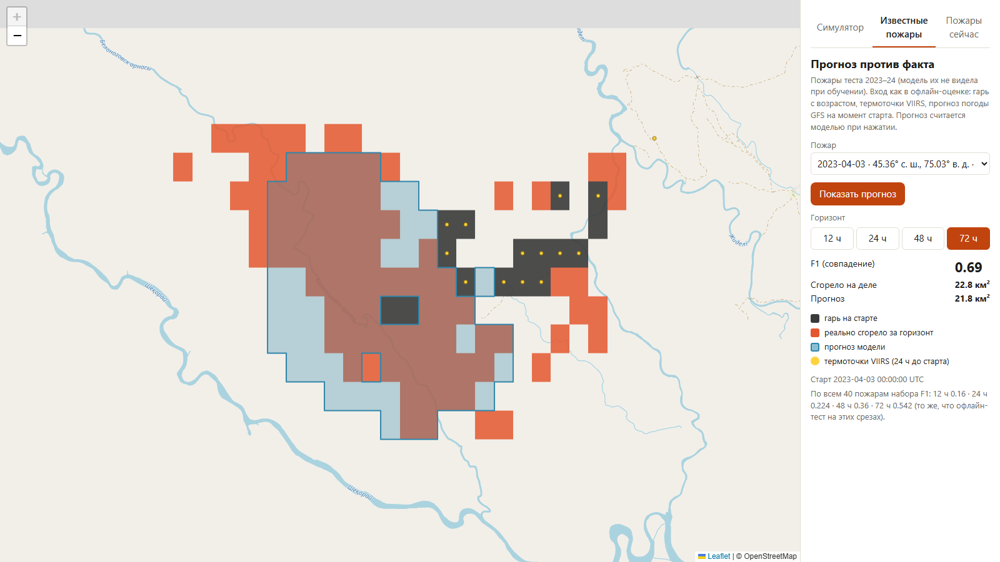
3 апреля 2023, 72 ч · F1 0,69
сгорело 22,8 км², прогноз 21,8 км²
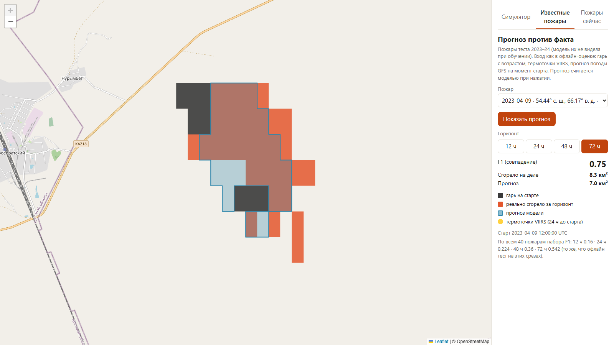
9 апреля 2023, 72 ч · F1 0,75
сгорело 8,3 км², прогноз 7,0 км²
гарь на старте
реально сгорело
прогноз модели
совпало
Результаты · 23 · вкладка «Известные пожары»: 40 пожаров теста 2023–24, по всем F1 на 72 ч 0,54
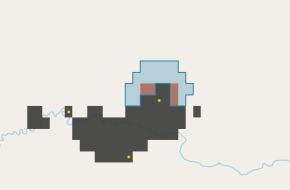
12 ч · F1 0,30
сгорело 1,0 км²
прогноз 5,8 км²
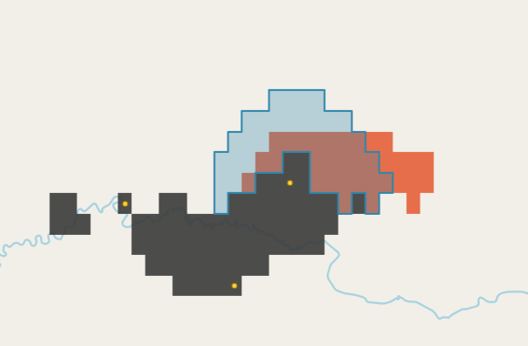
24 ч · F1 0,60
сгорело 8,3 км²
прогноз 11,0 км²
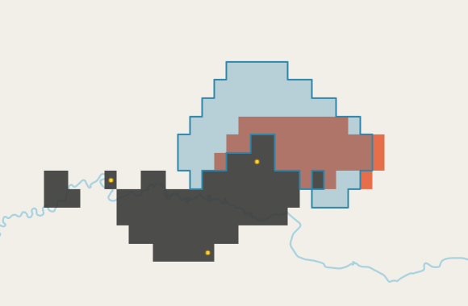
48 ч · F1 0,57
сгорело 8,3 км²
прогноз 18,0 км²
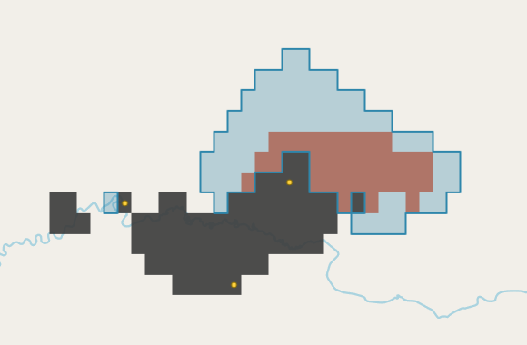
72 ч · F1 0,54
сгорело 8,3 км²
прогноз 22,5 км²
Направление модель угадала: огонь пошёл на север у восточного края старой гари. Но пожар остановился через сутки, а прогноз продолжал расти — отсюда завышение площади на 48–72 ч.
Результаты · 24 · пожар 1 октября 2024, 44,88° с. ш., 70,62° в. д.; скриншоты сайта
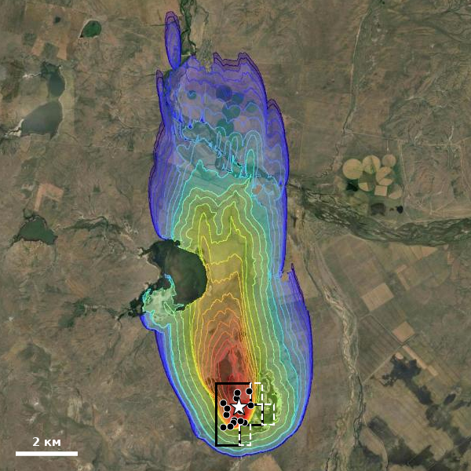
Карагандинская · 06.11
fires.kz 137 км²
наша 0 (акт. 0,8)
факт 0, погас
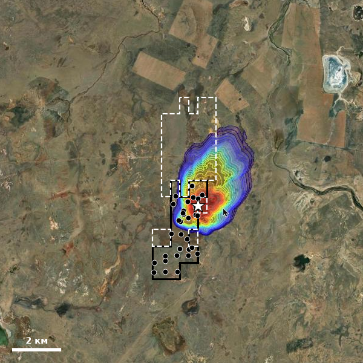
Карагандинская · 05.11
fires.kz 28 км²
наша 0 (акт. 8,3)
факт 0, погас
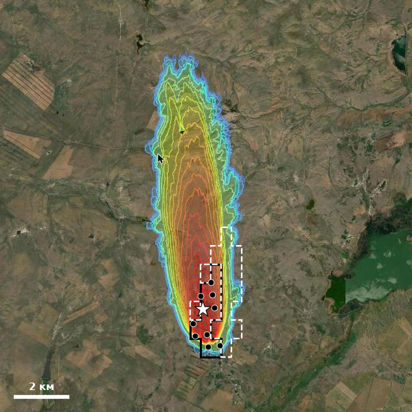
Карагандинская · 06.11
fires.kz 70 км²
наша 0 (акт. 3,8)
факт 0, погас
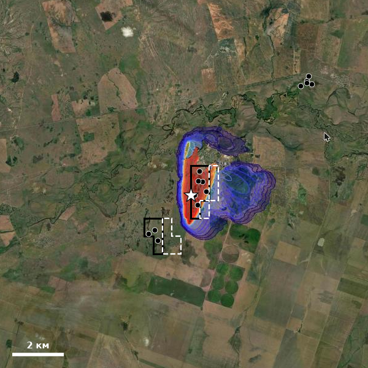
Акмолинская · 06.11
fires.kz 28 км²
наша 0 (акт. 1,5)
факт 0, погас
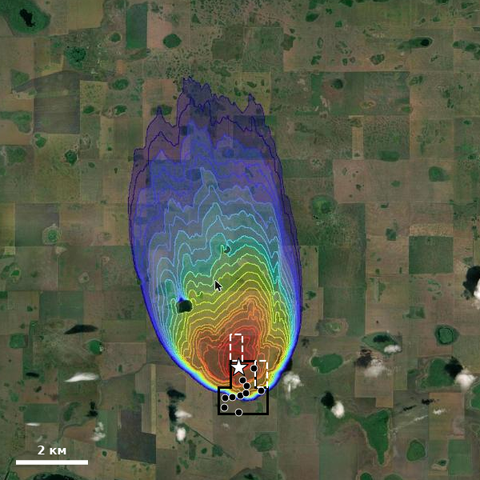
СКО · 05.11
fires.kz 85 км²
наша 0 (акт. 0,5)
факт +1 км²
моделирование fires.kz
наша гарь на старте
наш режим «активный пожар», 72 ч
термоточки FIRMS после старта
Их симулятор растит каждый пожар на 28–137 км² по ветру. На деле 4 из 5 погасли, пятый прибавил 1 км². Наш основной прогноз — «роста нет»: верно в 4 случаях, в пятом промах на 1 км².
Результаты · 25 · скриншоты fires.kz 07.11.2026 (последний шаг моделирования); наш прогноз и FIRMS наложены, точность привязки ~0,5–1 км
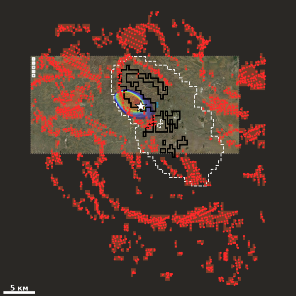
Абайская · 15.08
факт 316 км²
fires.kz 56
наша 0,3 (акт. 180)
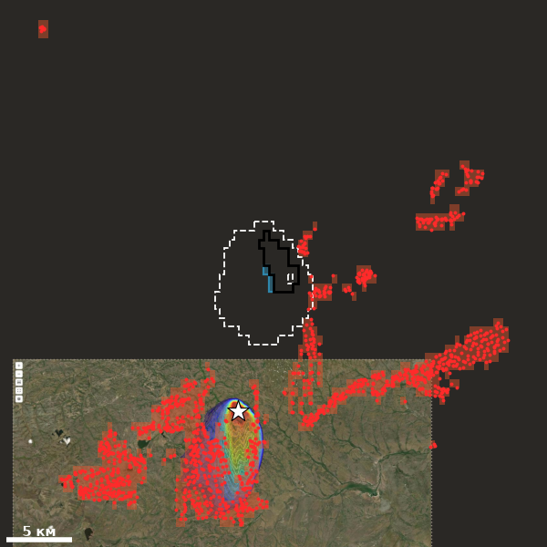
Карагандинская · 12.08
факт 133 км²
fires.kz 103
наша 0,8 (акт. 44)
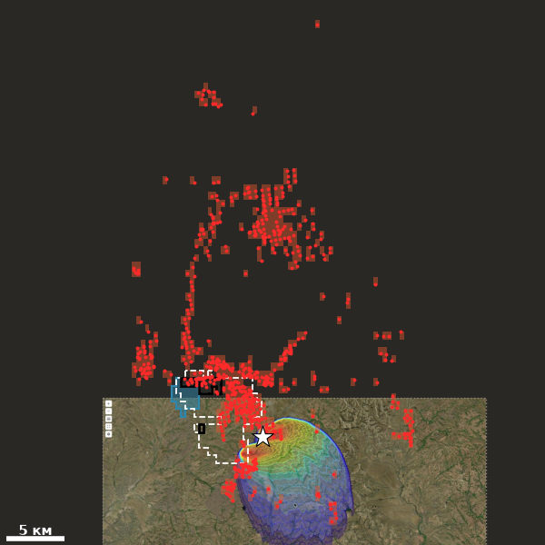
Карагандинская · 15.08
факт 92 км²
fires.kz 235
наша 5 (акт. 33)
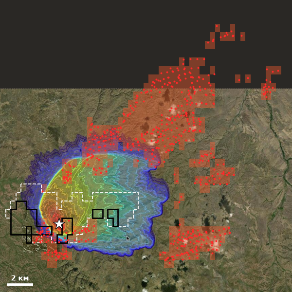
Абайская · 17.08
факт 72 км²
fires.kz 211
наша 0 (акт. 21)
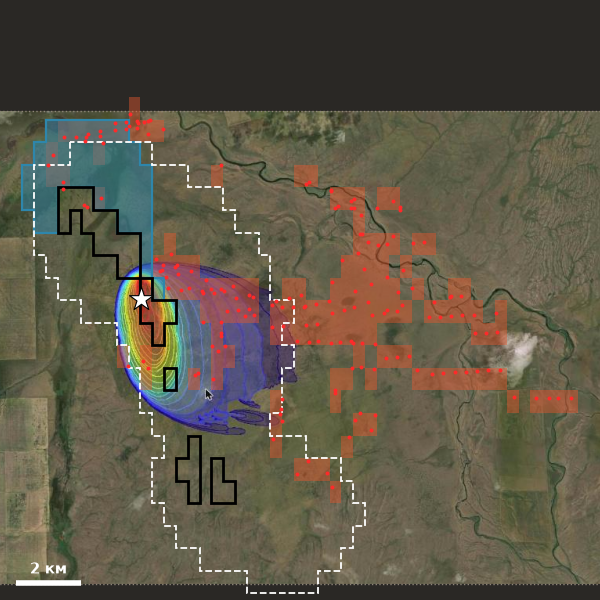
Акмолинская · 15.08
факт 33 км²
fires.kz 57
наша 11 (акт. 65)
fires.kz
сгорело за 72 ч (FIRMS)
наша гарь на старте
наш прогноз
«активный пожар»
Крупные летние пожары выросли на 33–316 км². fires.kz попадает в масштаб (56–235 км²), а наш основной прогноз занижает в десятки раз; режим «активный пожар» ближе (21–180 км²). Наша модель хорошо видит затухание, но пока недооценивает большие летние пожары.
Результаты · 26 · скриншоты fires.kz (24 шага моделирования); факт — новые клетки FIRMS в окне 48 км за 72 ч; привязка ~1–3 км
Что сделано
Что дальше